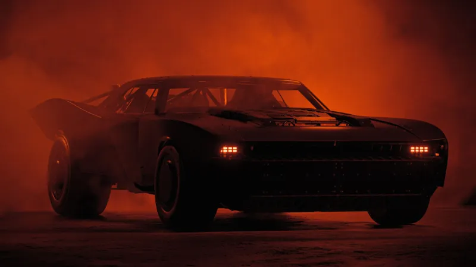

Batarang
The Batarang is one of Batman's signature gadgets, resembling a boomerang with a bat-like design. It is used for a variety of purposes, including incapacitating enemies, cutting ropes, and as a projectile weapon.
- Material: Usually made from a lightweight, durable metal.
- Varieties: Includes explosive, electrified, and even remote-controlled versions.
Grapnel Gun
The Grapnel Gun allows Batman to scale tall buildings and swing across rooftops. This tool is essential for navigation in the urban landscape of Gotham.
- Range: Can shoot a grappling hook over long distances.
- Retrieval: The line can be retracted for quick escapes.
Utility Belt
The Utility Belt is perhaps Batman's most important gadget, containing various compartments for storing tools and equipment.
- Modular: Can hold a wide array of items, including smoke pellets, medical kits, and electronic devices.
- Compact Design: Allows for easy access and quick deployment during combat situations.
Batmobile
The Batmobile is Batman's primary mode of transportation, equipped with high-tech features that assist in crime-fighting.
- Speed and Agility: Designed for high-speed chases and quick maneuverability.
- Weaponry: Includes gadgets like machine guns, grappling hooks, and armor plating.
The Knight
Batman’s gadgets are a testament to his intelligence, resourcefulness, and commitment to fighting crime. Each tool is carefully designed to assist him in various situations, making the Dark Knight a true symbol of justice in Gotham City. Whether he’s using the Batarang to disarm a foe or the Batmobile to chase down criminals, these gadgets are integral to his mission to protect the innocent.
